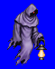
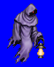
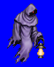
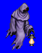

Height: Human height Weight: ???
Habitat: Graveyard and haunted areas Origin: Europe
Meaning: German "geist", which refers to spirits of ancestors
Ghosts are manifestations of spirits of the deceased. Their bodies are covered with white cloth, and their eyes glow crimson, but they are non-corporeal. In many cases, a ghost is a spirit who has lingered in this world as a result of some unresolved dispute with one who still lives. Ghosts live for around 400 years.